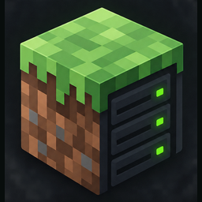
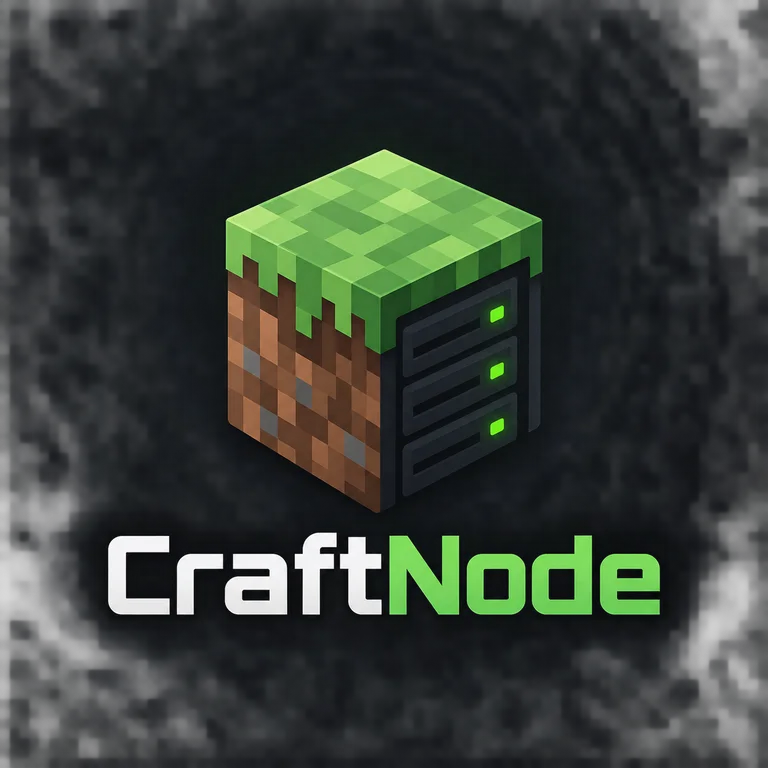

A home for every server
Create multiple worlds with their own software, Minecraft version, memory allocation, and port. Keep every server’s files separate.
Vanilla · Paper · Purpur · Fabric
CraftNode Get CraftNodeA home for the worlds you build. Create, run, and manage Minecraft servers from your own computer, with one thoughtfully simple desktop app.

From the first launch to your next backup,
keep the everyday work in one place.
Create multiple worlds with their own software, Minecraft version, memory allocation, and port. Keep every server’s files separate.
Vanilla · Paper · Purpur · FabricStart, stop, and restart from the dashboard. Follow the live console, send server commands, and see process CPU, memory, and uptime.
Live output. Real control.Edit server properties and configuration files, install trusted local plugins or mods, and manage player access from the app.
Everything in its placeStop your server and take a complete local snapshot. Restore an earlier backup while retaining the replaced files as a recovery copy.
A little peace of mindNo analytics, hidden uploads, or automatic public-IP lookups. Server downloads contact the selected software provider; your worlds and backups stay on your computer.
Download the Windows installer. Install a compatible Java runtime separately; CraftNode will detect it.
Choose your server software and version, set the memory and port, and read and accept the Minecraft EULA.
Launch your server and watch the console. Join locally, or configure your own firewall and network for friends to connect.
CraftNode for Windows · Version 0.1.0 preview
Download Windows installerNo. Your server runs on your computer and uses its resources. CraftNode is the desktop interface for managing it. You handle Java installation, internet connectivity, and any firewall or router settings.
Yes. Stop the original server and use Import. CraftNode copies its folder into isolated local storage, leaving the source in place. Servers requiring special launch scripts may need adaptation.
No. CraftNode is independent software. It is not an official Minecraft product and is not approved by or associated with Mojang or Microsoft.
Uninstalling the application preserves local server data and settings. Reinstalling can find that workspace again. Open local storage in CraftNode’s settings if you want to manage retained files.